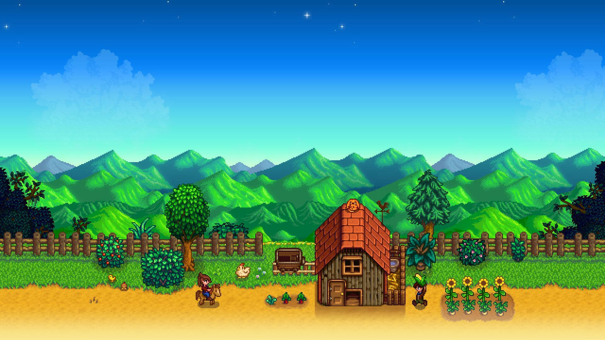

Stardew Valley Cheats, Tips & Full Review
A Stardew Valley (2016-02-25) világában rögtön elvesztem a részletekben, a Unknown Studio gondoskodott róla, hogy minden sarkon történjen valami érdekes. Többet olvashatsz róla a Wikipedia, a Steam vagy a Metacritic oldalakon.
A karakter képességeit használva a stratégiám sokszor döntő volt a csatákban, és minden új pálya új kihívást hozott.
A pályák felfedezésekor érdemes figyelni a környezet részleteire, ritka tárgyak vagy titkos küldetések rejtőzhetnek minden sarkon.
Összességében a Stardew Valley élménye magával ragadó, a felfedezés, a harc és a stratégia kombinációja minden percet élvezetessé tesz.
Gameplay Video
AI Rating
⭐ 4.9/5